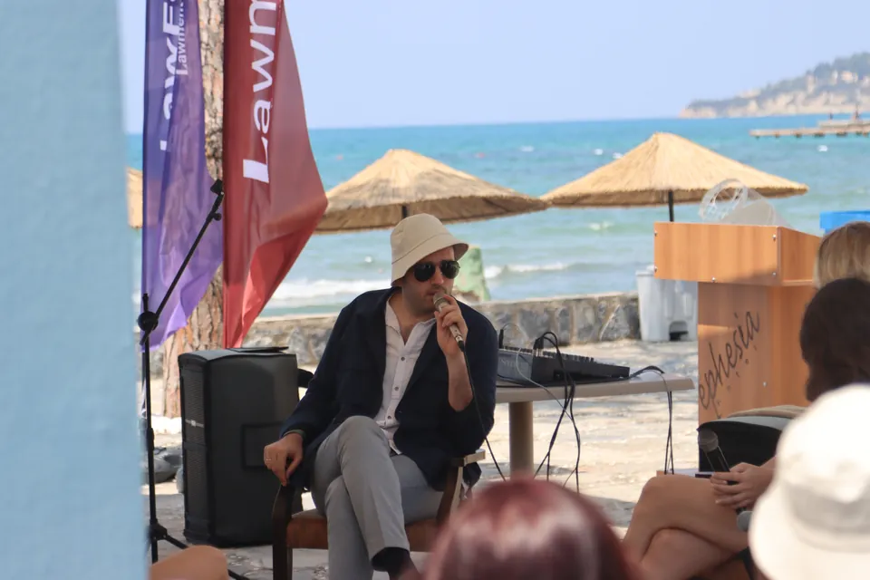
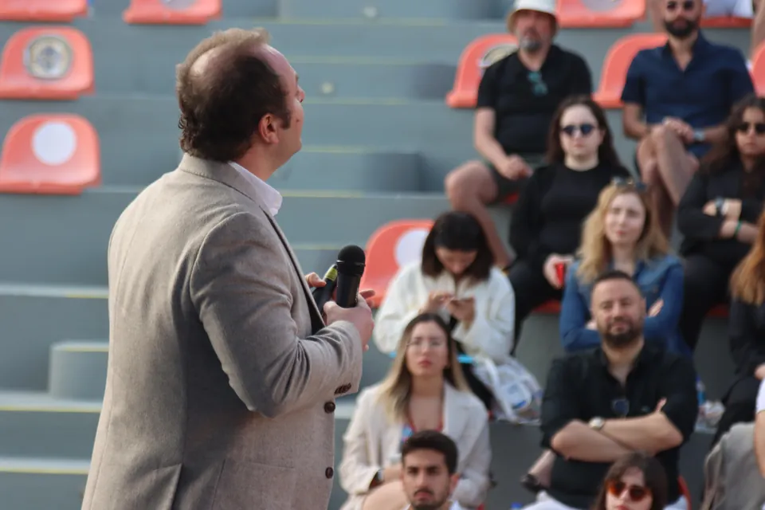
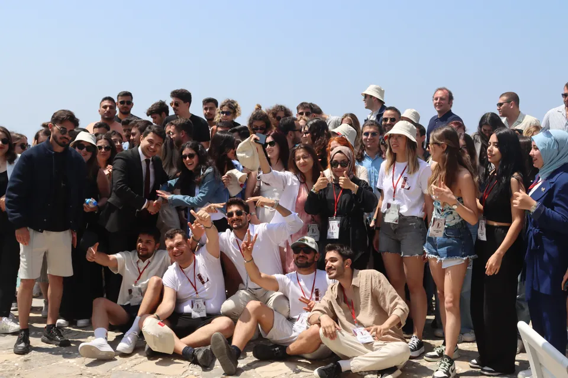
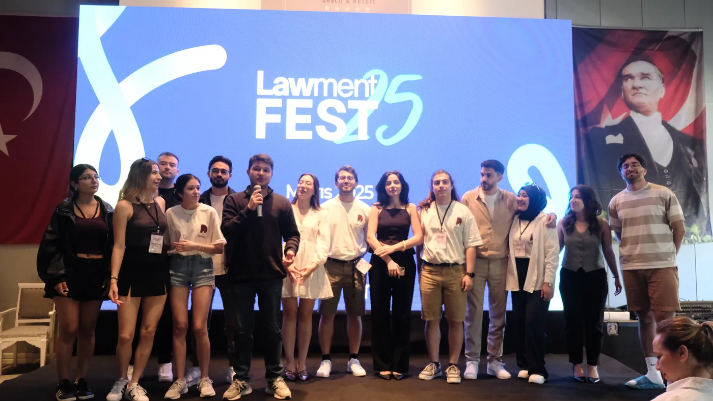
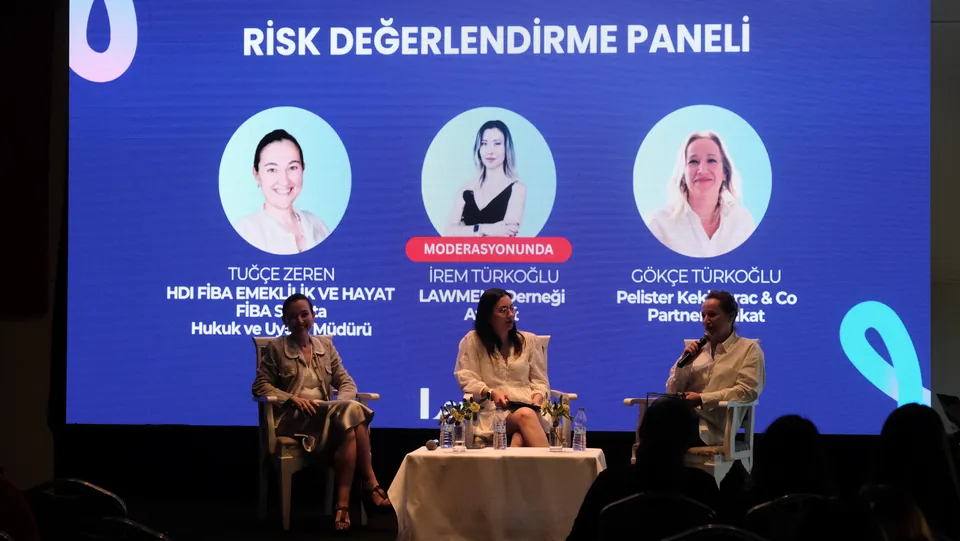
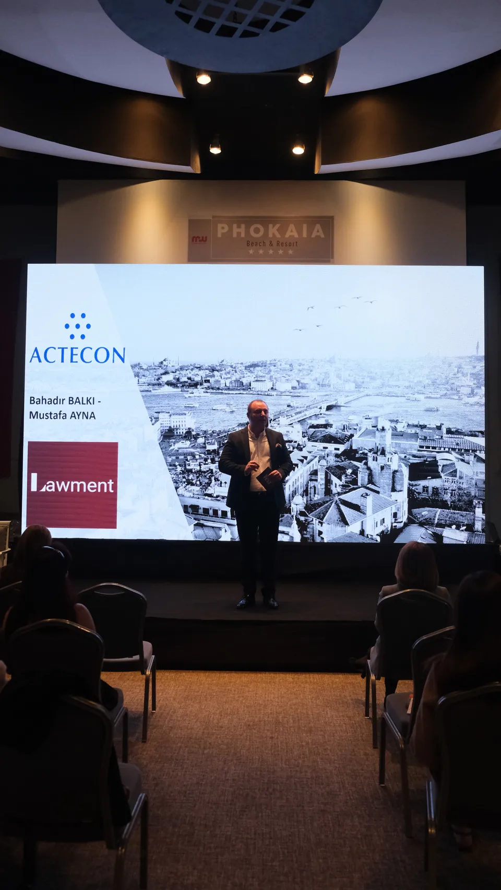
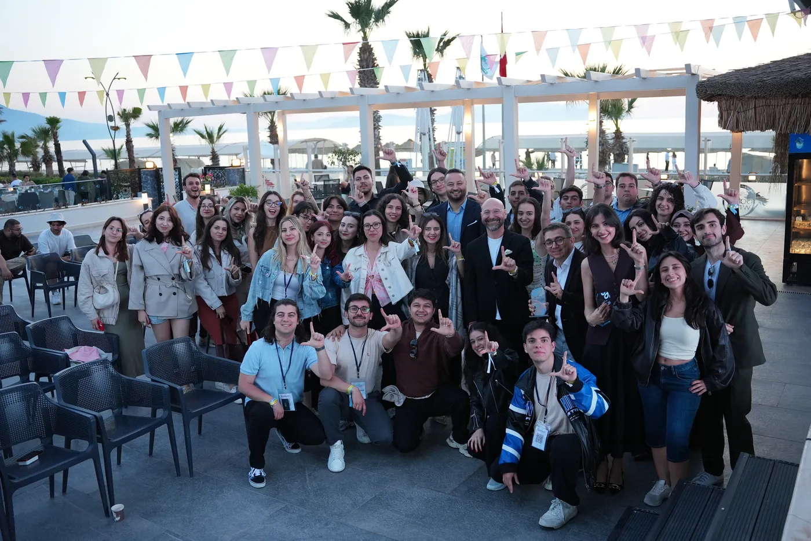
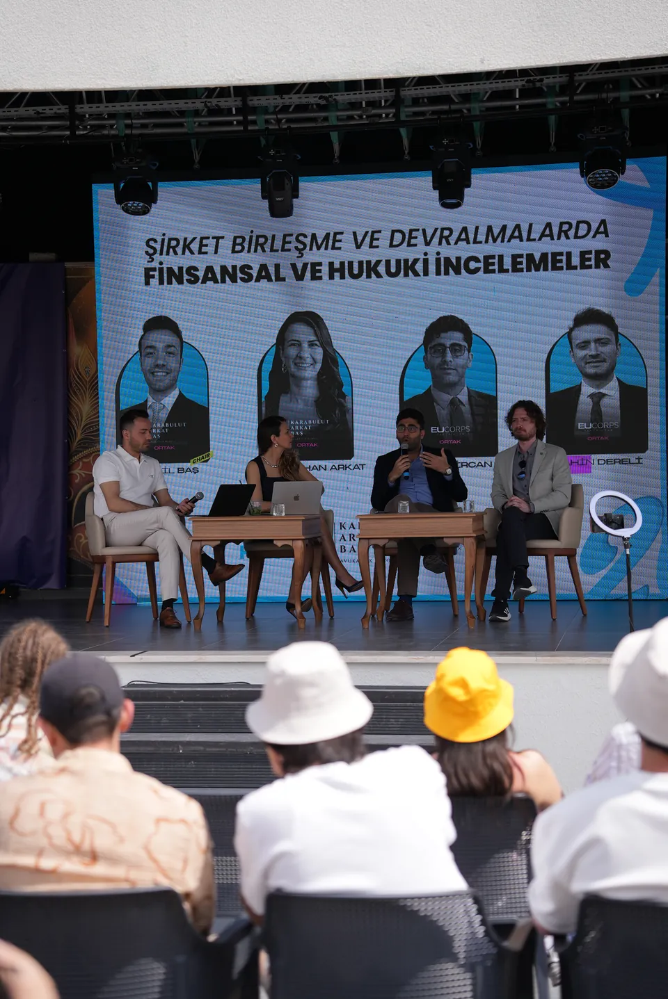
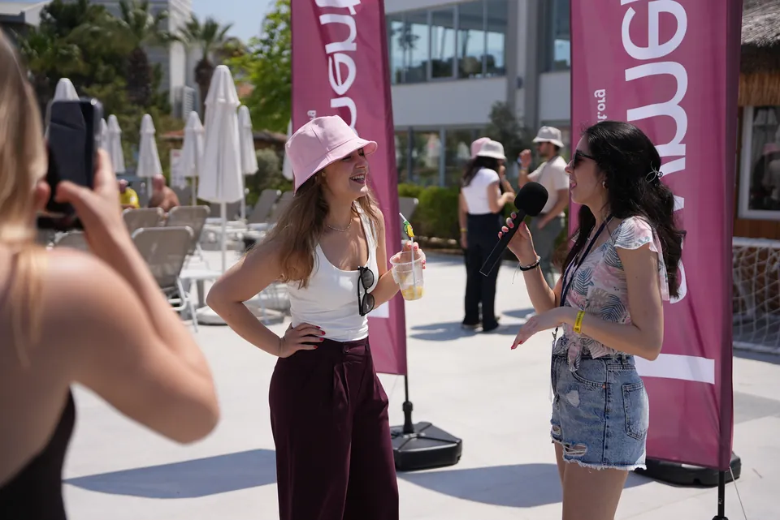
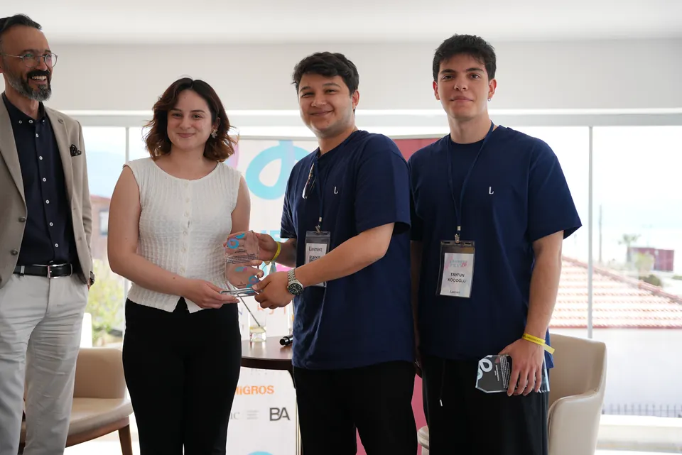

Arşiv · 2023 → 2027
Düzenlediğimiz büyük etkinliklerin kaydı. Her yıl daha fazla katılımcı, daha fazla kurum.
- 2023
- 100
- 2024
- 180
- 2025
- 265
-
2023
Cumhuriyet'in 100. yılı
Yeni Yüzyılın Hukuku
Cumhuriyet'in 100. yılına özel düzenlediğimiz ilk büyük etkinlik. Yüz hukukçuyu, hukukun yeni yüzyılda nereye gittiğini konuşmak için bir araya getirdi.
“Cumhuriyetimizin 100. yılında umutlarımın hayat bulmuş hali olarak gelecekteki yüz meslektaşımı görmek müthişti, dolu dolu geliyorlar. İyi ki varsınız.”
- Format
- 2 gün, 1 gece
- Katılım
- 100 hukukçu
- Yer alan kurumlar
- MSC, Baker McKenzie, Congar Law
-
2024
Festival formatına geçiş
Lawfest
Etkinliğin festivale dönüştüğü yıl. Paneller, atölyeler ve sosyal programla üç gün iki gece süren ilk hukuk festivali.





- Format
- 3 gün, 2 gece
- Katılım
- 180 genç hukukçu
- Yer alan kurumlar
- Kale Group, EDAC, MSC, QNB Finansbank
- Yıl içinde
- Back in Lawment
-
2025
Lawment Fest adıyla ilk yıl
Lawment Fest'25
Festivalin adı ve ölçeği büyüdü. Foça'da üç gün iki gece süren festivalde dokuz panel ve plaj voleybolundan okçuluğa sosyal etkinlikler vardı; o güne kadarki en kalabalık etkinliğimiz oldu.





- Format
- 3 gün, 2 gece
- Katılım
- 265 genç hukukçu
- Yer alan kurumlar
- ACTECON ve Mare Legal & Consultancy (platin sponsorlar), Kinstellar, SOCAR, Kale Group, Maersk, MSC, Arkas, EDAC, GE Healthcare, Baker McKenzie
- Yıl içinde
- Comparena 2025 · Back in Lawment
-
2026
Festivalin dördüncü yılı
Lawment Fest'26
Programda enerji hukuku ve rekabet hukuku panelleri, "Avukatlığa Bakış" oturumu ve deniz kenarında sosyal etkinlikler yer aldı. [programdan eklemek istediğiniz diğer başlıklar]





- Format
- 3 gün, 2 gece
- Katılım
- [sayı]
- Yer alan kurumlar
- [kurumlar]
- Yıl içinde
- Comparena 2026 · Back in Lawment · Lawment Insights'ın ilk sayısı
-
2027
Sıradaki takvim
Comparena 27 · Lawment Fest 27 · Back in Lawment
Üç etkinliğin hazırlıkları ve sponsorluk görüşmeleri sürüyor. Tarih ve yerler: [tarih ve yerler]
Arşivin bir sonraki satırı
2027'de sen de orada ol.
Katılımcı, gönüllü ya da kurum olarak yerini şimdiden ayırabilirsin.